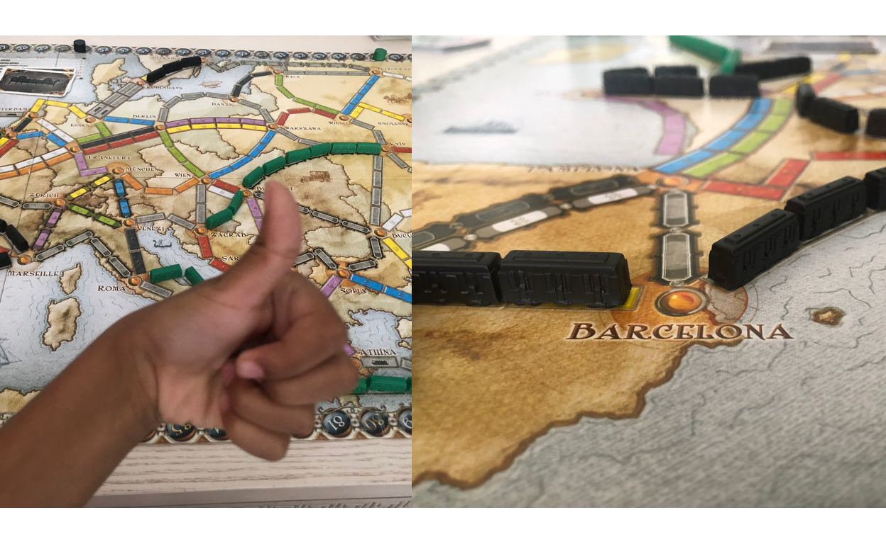
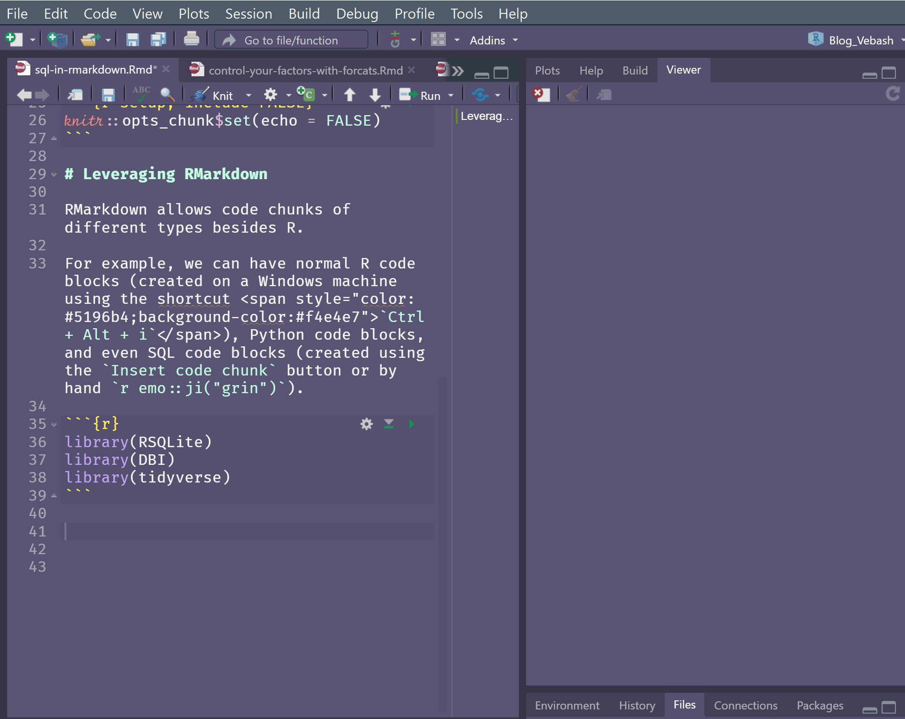
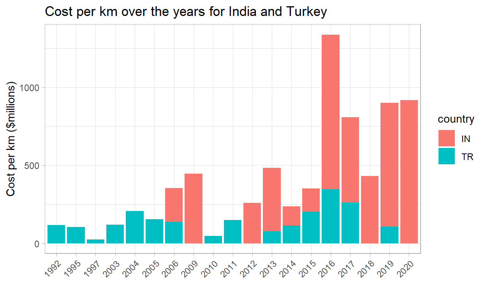

Leveraging RMarkdown
RMarkdown (Rmd) allows code chunks of different language types besides R.
For example, we can have normal R code blocks (created on a Windows machine using the shortcut Ctrl + Alt + i), Python code blocks, and even SQL code blocks (created using the Insert code chunk button, or by hand 😄).

In this post we’re going to write SQL syntax and intertwine that with R code to enable you to use both, if you are familiar with both.
We will also look at the {tidyquery} package which allows you to learn {dplyr} if you’re more familiar with SQL, but keen to grasp more {dplyr}.
Prerequisites
The blog post assumes that you have at least a beginner understanding of:
- RMarkdown
- SQL
- Tidyverse
- Connecting to a DB from RStudio (see Part I, Part II or Part III for more info).
Dataset
In my home, my 6 year old is currently obsessed with Ticket to Ride Europe, so I was excited when I saw the TidyTuesday Transit Costs Project data 🚋.
Glimpse into the Data
To work with a Database in R we need a few packages. There are a few blog posts on this site that contains more info on how this is achieved, for example, Using the Tidyverse with Databases - Part I.
If we look at the data we see that Country is the 2-letter code CZ, DK, CH etc. We can use the {countrycode} package to find the actual country name.
Let’s take a look at a few of the variables included in the countrycode::codelist dataframe.
library(countrycode)
codelist %>%
select(country.name.en,
country.name.en.regex,
iso.name.en,
currency,
iso2c, iso3c)
# A tibble: 288 x 6
country.name.en country.name.en.~ iso.name.en currency iso2c iso3c
<chr> <chr> <chr> <chr> <chr> <chr>
1 Afghanistan afghan Afghanistan Afghani AF AFG
2 Åland Islands ^[å|a]land Åland Isla~ Euro AX ALA
3 Albania albania Albania Lek AL ALB
4 Algeria algeria Algeria Algeria~ DZ DZA
5 American Samoa ^(?=.*americ).*s~ American S~ US Doll~ AS ASM
6 Andorra andorra Andorra Euro AD AND
7 Angola angola Angola Kwanza AO AGO
8 Anguilla anguill?a Anguilla East Ca~ AI AIA
9 Antarctica antarctica Antarctica <NA> AQ ATA
10 Antigua & Barbu~ antigua Antigua an~ East Ca~ AG ATG
# ... with 278 more rowsIf you try the countrycode::countrycode() function you will get a warning for UK in the transit_cost dataset. This is because the United Kingdom is coded as GB not UK. So we need to amend our dataset first before we try and use the function.
transit_cost %>%
# rename UK as GB to enable
# the join later
mutate(country = if_else(country == "UK",
"GB",
country)) %>%
mutate(country_name = countrycode(country, origin = 'iso2c',
destination = "country.name")) %>%
count(country, country_name, sort = TRUE) %>%
DT::datatable(list(scrollX = TRUE,
pageLength = 8))
Now we can see which country is attached to which iso2 code, DK = Denmark, CN = China etc.
The codelist dataframe contains the raw data for countries as we saw previously.
Show code
codelist %>%
head(4)
# A tibble: 4 x 743
ar5 cctld continent country.name.de country.name.de.regex
<chr> <chr> <chr> <chr> <chr>
1 ASIA .af Asia Afghanistan afghan
2 OECD1990 .ax Europe Aland Islands åland
3 EIT .al Europe Albanien albanien
4 MAF .dz Africa Algerien algerien
# ... with 738 more variables: country.name.en <chr>,
# country.name.en.regex <chr>, cow.name <chr>, cowc <chr>,
# cown <dbl>, currency <chr>, dhs <chr>, ecb <chr>, eu28 <chr>,
# eurocontrol_pru <chr>, eurocontrol_statfor <chr>, eurostat <chr>,
# fao <dbl>, fips <chr>, gaul <dbl>, genc2c <chr>, genc3c <chr>,
# genc3n <chr>, gwc <chr>, gwn <dbl>, icao.region <chr>, imf <dbl>,
# ioc <chr>, iso.name.en <chr>, iso.name.fr <chr>, iso2c <chr>,
# iso3c <chr>, iso3n <dbl>, iso4217c <chr>, iso4217n <dbl>,
# p4.name <chr>, p4c <chr>, p4n <dbl>, region <chr>,
# region23 <chr>, un <dbl>, un.name.ar <chr>, un.name.en <chr>,
# un.name.es <chr>, un.name.fr <chr>, un.name.ru <chr>,
# un.name.zh <chr>, un.region.code <dbl>, un.region.name <chr>,
# un.regionintermediate.code <dbl>,
# un.regionintermediate.name <chr>, un.regionsub.code <dbl>,
# un.regionsub.name <chr>, unicode.symbol <chr>, unpd <dbl>,
# vdem <dbl>, vdem.name <chr>, wb <chr>, wb_api2c <chr>,
# wb_api3c <chr>, wvs <dbl>, cldr.name.af <chr>,
# cldr.name.agq <chr>, cldr.name.ak <chr>, cldr.name.am <chr>,
# cldr.name.ar <chr>, cldr.name.ar_ly <chr>, cldr.name.ar_sa <chr>,
# cldr.name.as <chr>, cldr.name.asa <chr>, cldr.name.ast <chr>,
# cldr.name.az <chr>, cldr.name.az_cyrl <chr>, cldr.name.bas <chr>,
# cldr.name.be <chr>, cldr.name.bem <chr>, cldr.name.bez <chr>,
# cldr.name.bg <chr>, cldr.name.bm <chr>, cldr.name.bn <chr>,
# cldr.name.bo <chr>, cldr.name.br <chr>, cldr.name.brx <chr>,
# cldr.name.bs <chr>, cldr.name.bs_cyrl <chr>, cldr.name.ca <chr>,
# cldr.name.ccp <chr>, cldr.name.ce <chr>, cldr.name.ceb <chr>,
# cldr.name.cgg <chr>, cldr.name.chr <chr>, cldr.name.ckb <chr>,
# cldr.name.cs <chr>, cldr.name.cu <chr>, cldr.name.cy <chr>,
# cldr.name.da <chr>, cldr.name.dav <chr>, cldr.name.de <chr>,
# cldr.name.de_at <chr>, cldr.name.de_ch <chr>,
# cldr.name.dje <chr>, cldr.name.dsb <chr>, cldr.name.dua <chr>,
# cldr.name.dyo <chr>, cldr.name.dz <chr>, ...Write data to a SQLite DB
We’re going to write the transit_cost and codelist dataframes into tables in a SQLite DB for our demo.
# Amend UK to GB for the join of country names later
transit_cost <- transit_cost %>%
mutate(country = if_else(country == "UK",
"GB",
country))
# rename to an easy to understand SQL table name
country_codes <- codelist
# Write dataframes into DB tables
dbWriteTable(con,
"transit_cost", # table will be named transit_cost
transit_cost, # df being written
overwrite = TRUE)
dbWriteTable(con,
"country_codes", # table will be named country_codes
country_codes, # df being written
overwrite = TRUE)
# close the connection
dbDisconnect(con)
I closed the connection here since the tasks of writing data into a Database, and reading from it, are most likely separate.
In this blog post these functions run into each other, and we don’t strictly need to do this dbDisconnect(con) here.
Connect to the Database
Now that we have a SQLite DB, we can connect to it and query the data we have stored there.
# Make a connection
ttr_con <- dbConnect(RSQLite::SQLite(), "ticket_to_ride.sqlite")
# List tables in DB
dbListTables(ttr_con)
[1] "country_codes" "transit_cost" Ah nice, we see our two tables. Let’s have a closer look.
# Get a glimpse of the data
# Using our connection reach into the DB
# and show us some of the data for GR
# Equivalent to:
# SELECT * FROM transit_cost
# WHERE country = 'GR'
tbl(ttr_con, "transit_cost") %>%
filter(country == "GR")
# Source: lazy query [?? x 20]
# Database: sqlite 3.33.0
# [C:\Personal\Blog_Vebash\_posts\2021-03-27-sql-in-rmarkdown\ticket_to_ride.sqlite]
e country city line start_year end_year rr length
<dbl> <chr> <chr> <chr> <chr> <chr> <dbl> <dbl>
1 7313 GR Athens Line 4 2019 2027 0 12.8
2 7314 GR Athens Line 3 to ~ 2012 2021 0 7.6
3 7315 GR Thessalo~ Main line 2006 2020 0 9.5
4 7320 GR Thessalo~ Kalamaria ~ 2013 2021 0 4.8
# ... with 12 more variables: tunnel_per <chr>, tunnel <dbl>,
# stations <dbl>, source1 <chr>, cost <dbl>, currency <chr>,
# year <dbl>, ppp_rate <dbl>, real_cost <chr>,
# cost_km_millions <dbl>, source2 <chr>, reference <chr>Code Chunks
All our code chunks have thus far been r code chunks:
```{r}
# Do some processing
```For example, to filter the Greece transit data in the dataset, we used the code chunk:
```{r}
# Get a glimpse of the data
tbl(ttr_con, "transit_cost") %>%
filter(country == "GR")
```Adding SQL Code chunks
To add a SQL code chunk we can use the Insert a new code chunk drop down item. But a SQL code chunk also needs one additional argument - the connection object which represents the connection to the database.
```{sql, connection = con}
# Do some processing
```Let’s try it.
```{sql, connection = ttr_con}
-- This is a SQL comment
-- Notice our connection is the ttr_con we established
-- in the {r} code chunk earlier.
SELECT *
FROM transit_cost
WHERE country = 'GR'
LIMIT 10
```There is even syntax highlighting in the {sql, connection = ttr_con} code blocks.

Show code
-- This is a SQL comment
-- Notice our connection is the ttr_con we established
-- in the {r} code chunk earlier.
SELECT *
FROM transit_cost
WHERE country = 'GR'
LIMIT 10| e | country | city | line | start_year | end_year | rr | length | tunnel_per | tunnel | stations | source1 | cost | currency | year | ppp_rate | real_cost | cost_km_millions | source2 | reference |
|---|---|---|---|---|---|---|---|---|---|---|---|---|---|---|---|---|---|---|---|
| 7313 | GR | Athens | Line 4 | 2019 | 2027 | 0 | 12.8 | 100.00% | 12.8 | 15 | Plan | 1328 | EUR | 2023 | 1.3 | 1726.4 | 134.8750 | Plan | https://www.ametro.gr/?p=14801&lang=en |
| 7314 | GR | Athens | Line 3 to Piraeus | 2012 | 2021 | 0 | 7.6 | 100.00% | 7.6 | 6 | Plan | 742 | EUR | 2016 | 1.3 | 964.6 | 126.9211 | Plan | https://www.ametro.gr/wp-content/uploads/2018/08/AM_Xrimatooikonomikes_katastaseis_2017.pdf |
| 7315 | GR | Thessaloniki | Main line | 2006 | 2020 | 0 | 9.5 | 100.00% | 9.5 | 13 | Plan | 1112 | EUR | 2014 | 1.3 | 1445.6 | 152.1684 | Plan | https://omekgroup.com.gr/projects/thessaloniki-metro/ |
| 7320 | GR | Thessaloniki | Kalamaria Extension | 2013 | 2021 | 0 | 4.8 | 100.00% | 4.8 | 5 | Plan | 567 | EUR | 2017 | 1.3 | 737.1 | 153.5625 | Plan | https://www.ametro.gr/wp-content/uploads/2018/08/AM_Xrimatooikonomikes_katastaseis_2017.pdf |
The
connectionis the one we established earlier, in an{r}code chunk, shown again below.```{r} # Make a connection ttr_con <- dbConnect(RSQLite::SQLite(), "ticket_to_ride.sqlite") # List tables in DB dbListTables(ttr_con) ```The
SQLcode chunk uses a different character for comments. The--(double dashes) is aSQLcomment marker, whereas the#(hash / pound symbol / octothorpe) is used forRandPythoncomments.```{sql, connection = ttr_con} -- This is a SQL comment -- Notice our connection is the ttr_con we established -- in the {r} code chunk earlier. -- Do some processing ... ```
Using Your SQL Knowledge
Let’s use SQL to get a few columns of the transit_cost table for Denmark (DK) and Turkey (TR). My kid’s favourite route in Ticket to Ride is Kobenhavn-Erzurum so he can use the high scoring tunnel, which gets him 21 points 🎉!
```{sql, connection = ttr_con}
SELECT country
, city
, start_year
, end_year
, cost_km_millions
, AVG(cost_km_millions) OVER (PARTITION BY country) AS avg_cost_km
, MAX(cost_km_millions) OVER (PARTITION BY country) AS max_cost_km
FROM transit_cost
WHERE country IN ('DK', 'TR')
ORDER BY country, start_year
```Show code
SELECT country
, city
, start_year
, end_year
, cost_km_millions
, AVG(cost_km_millions) OVER (PARTITION BY country) AS avg_cost_km
, MAX(cost_km_millions) OVER (PARTITION BY country) AS max_cost_km
FROM transit_cost
WHERE country IN ('DK', 'TR')
ORDER BY start_year, country| country | city | start_year | end_year | cost_km_millions | avg_cost_km | max_cost_km |
|---|---|---|---|---|---|---|
| TR | Istanbul | 1992 | 2015 | 117.5800 | 107.9630 | 262.4200 |
| TR | Izmir | 1995 | 2000 | 103.4500 | 107.9630 | 262.4200 |
| TR | Bursa | 1997 | 2014 | 22.8800 | 107.9630 | 262.4200 |
| TR | Ankara | 2003 | 2017 | 119.3100 | 107.9630 | 262.4200 |
| TR | Istanbul | 2004 | 2013 | 206.2500 | 107.9630 | 262.4200 |
| TR | Istanbul | 2005 | 2012 | 100.9000 | 107.9630 | 262.4200 |
| TR | Izmir | 2005 | 2014 | 51.8100 | 107.9630 | 262.4200 |
| TR | Istanbul | 2006 | 2013 | 136.4500 | 107.9630 | 262.4200 |
| DK | Copenhagen | 2009 | 2019 | 225.2516 | 225.2516 | 225.2516 |
| TR | Izmir | 2010 | 2012 | 47.1100 | 107.9630 | 262.4200 |
Passing data between code blocks
We can also pass data between code blocks by using the ouput.var variable in a code block.
For example, below we use a SQL query (in a {sql, connection = ttr_con} code block) but the result is stored in a variable which is subsequently used in an {r} code chunk. How cool is that! 🆒 💪
```{sql, connection = ttr_con, output.var = "transit_subset"}
-- output stored in transit_subset
SELECT country
, city
, start_year
, end_year
, cost_km_millions
FROM transit_cost
```Show code
-- output stored in transit_subset
SELECT country
, city
, start_year
, end_year
, cost_km_millions
FROM transit_costWhen we store the data in a variable the SQL query is executed on the DB and the output stored in the variable. As a result we don’t see the results of the query as output from the code chunk, as we have seen previously.
Now let’s use the transit_subset variable in an {r} code chunk, to see how many transit lines the country has.
```{r}
transit_subset %>%
count(country, sort = TRUE) %>%
DT::datatable(list(scrollX = TRUE,
pageLength = 8))
```How about if we want to use {dplyr} to get the average cost per km in millions of dollars, for Denmark and Turkey as we did in the SQL code previously?
```{r}
transit_subset %>%
filter(country %in% c('DK', 'TR')) %>%
group_by(country) %>%
mutate(avg_cost_km = mean(cost_km_millions, na.rm = TRUE)) %>%
ungroup()
```Show code
# A tibble: 21 x 6
country city start_year end_year cost_km_millions avg_cost_km
<chr> <chr> <chr> <chr> <dbl> <dbl>
1 DK Copenhagen 2009 2019 225. 225.
2 TR Istanbul 1992 2015 118. 108.
3 TR Istanbul 2006 2013 136. 108.
4 TR Istanbul 2005 2012 101. 108.
5 TR Istanbul 2013 2016 75.8 108.
6 TR Istanbul 2011 2018 101. 108.
7 TR Istanbul 2004 2013 206. 108.
8 TR Istanbul 2011 2019 47.4 108.
9 TR Istanbul 2014 2022 113. 108.
10 TR Izmir 1995 2000 103. 108.
# ... with 11 more rowsOr what if we wanted to make a plot of the costs over time, for a few select countries.
```{r}
transit_subset %>%
filter(country %in% c('IN', 'TR'),
!is.na(start_year)) %>%
ggplot(aes(start_year,
cost_km_millions,
fill = country)) +
geom_col() +
theme_light() +
theme(axis.text.x = element_text(angle = 45,
hjust = 1)) +
labs(x = "",
y = "Cost per km ($millions)",
title = "Cost per km over the years for India and Turkey")
```Show code
transit_subset %>%
filter(country %in% c('IN', 'TR'),
!is.na(start_year)) %>%
ggplot(aes(start_year,
cost_km_millions,
fill = country)) +
geom_col() +
theme_light() +
theme(axis.text.x = element_text(angle = 45,
hjust = 1)) +
labs(x = "",
y = "Cost per km ($millions)",
title = "Cost per km over the years for India and Turkey")

It’s really empowering to flex both our R and SQL skills!
We are able to write quite complex SQL code in the {sql connection = ttr_con} code blocks, including joins, window functions etc.
Here’s an example of a join in order to get the country name:
```{sql, connection = ttr_con}
SELECT t.country AS country_code
, "country.name.en" AS country
, t.city
, t.currency
, t.start_year
, t.end_year
, t.cost_km_millions
FROM transit_cost t
INNER JOIN country_codes c
ON t.country = c.iso2c
LIMIT 10
```
Show code
SELECT t.country AS country_code
, "country.name.en" AS country
, t.city
, t.currency
, t.start_year
, t.end_year
, t.cost_km_millions
FROM transit_cost t
INNER JOIN country_codes c
ON t.country = c.iso2c
LIMIT 10| country_code | country | city | currency | start_year | end_year | cost_km_millions |
|---|---|---|---|---|---|---|
| CA | Canada | Vancouver | CAD | 2020 | 2025 | 417.0526 |
| CA | Canada | Toronto | CAD | 2009 | 2017 | 301.3953 |
| CA | Canada | Toronto | CAD | 2020 | 2030 | 592.3077 |
| CA | Canada | Toronto | CAD | 2020 | 2030 | 464.6013 |
| CA | Canada | Toronto | CAD | 2020 | 2030 | 635.6757 |
| NL | Netherlands | Amsterdam | EUR | 2003 | 2018 | 415.4639 |
| CA | Canada | Montreal | CAD | 2020 | 2026 | 651.7241 |
| US | United States | Seattle | USD | 2009 | 2016 | 344.3137 |
| US | United States | Los Angeles | USD | 2020 | 2027 | 857.1429 |
| US | United States | Los Angeles | USD | 2018 | 2026 | 571.4286 |
Cleaning Up
Finally we need to disconnect from the database, which we do in an {r} code chunk.
```{r}
dbDisconnect(con)
```Show code
dbDisconnect(con)
The {tidyquery} package
We can use a nifty package called {tidyquery} to query a dataframe as though it is a SQL table, with some limitations (for example, OVER clauses are not yet supported).
For the rest of the post the code that is in {r} code chunks.
tidyquery::query()
First up is the query("SELECT * FROM df_name").
The function allows you to write SQL statements on an R data frame.
"SELECT * FROM"is the familiar SQL syntax.df_nameis the data frame name in your code (we will use thetransit_costandcountry_codesdata frames).- Note: We called our tables in the DB by the same names, but we have closed the connection to the DB in the section prior to this.
[1] "spec_tbl_df" "tbl_df" "tbl" "data.frame" glimpse(transit_cost)
Rows: 544
Columns: 20
$ e <dbl> 7136, 7137, 7138, 7139, 7144, 7145, 7146, 7~
$ country <chr> "CA", "CA", "CA", "CA", "CA", "NL", "CA", "~
$ city <chr> "Vancouver", "Toronto", "Toronto", "Toronto~
$ line <chr> "Broadway", "Vaughan", "Scarborough", "Onta~
$ start_year <chr> "2020", "2009", "2020", "2020", "2020", "20~
$ end_year <chr> "2025", "2017", "2030", "2030", "2030", "20~
$ rr <dbl> 0, 0, 0, 0, 0, 0, 0, 0, 0, 0, 0, 0, 0, 0, 0~
$ length <dbl> 5.7, 8.6, 7.8, 15.5, 7.4, 9.7, 5.8, 5.1, 4.~
$ tunnel_per <chr> "87.72%", "100.00%", "100.00%", "57.00%", "~
$ tunnel <dbl> 5.0, 8.6, 7.8, 8.8, 7.4, 7.1, 5.8, 5.1, 4.2~
$ stations <dbl> 6, 6, 3, 15, 6, 8, 5, 2, 2, 2, 3, 3, 4, 7, ~
$ source1 <chr> "Plan", "Media", "Wiki", "Plan", "Plan", "W~
$ cost <dbl> 2830, 3200, 5500, 8573, 5600, 3100, 4500, 1~
$ currency <chr> "CAD", "CAD", "CAD", "CAD", "CAD", "EUR", "~
$ year <dbl> 2018, 2013, 2018, 2019, 2020, 2009, 2018, 2~
$ ppp_rate <dbl> 0.840, 0.810, 0.840, 0.840, 0.840, 1.300, 0~
$ real_cost <chr> "2377.2", "2592", "4620", "7201.32", "4704"~
$ cost_km_millions <dbl> 417.05263, 301.39535, 592.30769, 464.60129,~
$ source2 <chr> "Media", "Media", "Media", "Plan", "Media",~
$ reference <chr> "https://www.translink.ca/Plans-and-Project~class(country_codes)
[1] "tbl_df" "tbl" "data.frame"Alright let’s see the query() function in action.
query(
"SELECT country
, city
, start_year
, end_year
, cost_km_millions
FROM transit_cost
WHERE country IN ('DK', 'TR')
ORDER BY start_year, country ;
"
)
# A tibble: 21 x 5
country city start_year end_year cost_km_millions
<chr> <chr> <chr> <chr> <dbl>
1 TR Istanbul 1992 2015 118.
2 TR Izmir 1995 2000 103.
3 TR Bursa 1997 2014 22.9
4 TR Ankara 2003 2017 119.
5 TR Istanbul 2004 2013 206.
6 TR Istanbul 2005 2012 101.
7 TR Izmir 2005 2014 51.8
8 TR Istanbul 2006 2013 136.
9 DK Copenhagen 2009 2019 225.
10 TR Izmir 2010 2012 47.1
# ... with 11 more rowsWe get the results of our query on a data frame! 😮 😱
tidyquery::show_dplyr()
The package also has a show_dplyr() function to let you see how to use {dplyr} verbs to get equivalent output as your SQL query ❗ 🌠.
- Call
show_dplyr() - Pass in a SQL query in
""as an argument.
show_dplyr(
"SELECT country
, city
, start_year
, end_year
, cost_km_millions
FROM transit_cost
WHERE country IN ('DK', 'TR')
ORDER BY start_year, country ;
"
)
transit_cost %>%
filter(country %in% c("DK", "TR")) %>%
select(country, city, start_year, end_year, cost_km_millions) %>%
arrange(start_year, country)We get the {dplyr} pipeline!
Toggle to {dplyr} from SQL
Copying and pasting this {dplyr} pipeline into an {r} code chunk results in the same output! Nice, eh? 🎉
transit_cost %>%
filter(country %in% c("DK", "TR")) %>%
select(country, city, start_year, end_year, cost_km_millions) %>%
arrange(start_year, country)
# A tibble: 21 x 5
country city start_year end_year cost_km_millions
<chr> <chr> <chr> <chr> <dbl>
1 TR Istanbul 1992 2015 118.
2 TR Izmir 1995 2000 103.
3 TR Bursa 1997 2014 22.9
4 TR Ankara 2003 2017 119.
5 TR Istanbul 2004 2013 206.
6 TR Istanbul 2005 2012 101.
7 TR Izmir 2005 2014 51.8
8 TR Istanbul 2006 2013 136.
9 DK Copenhagen 2009 2019 225.
10 TR Izmir 2010 2012 47.1
# ... with 11 more rows{tidyquery} can also do more complex querying.
query(
'SELECT t.country AS country_code
, country.name.en AS country_name
, COUNT(city) AS num_lines
FROM transit_cost t
INNER JOIN country_codes c
ON t.country = c.iso2c
GROUP BY t.country, country.name.en
HAVING num_lines >= 10
ORDER BY num_lines DESC
LIMIT 15
'
)
# A tibble: 11 x 3
country_code country_name num_lines
<chr> <chr> <int>
1 CN China 253
2 IN India 29
3 TR Turkey 20
4 ES Spain 15
5 FR France 15
6 JP Japan 15
7 DE Germany 13
8 US United States 13
9 TW Taiwan 12
10 IT Italy 11
11 CA Canada 10show_dplyr(
'SELECT t.country AS country_code
, country.name.en AS country_name
, COUNT(city) AS num_lines
FROM transit_cost t
INNER JOIN country_codes c
ON t.country = c.iso2c
GROUP BY t.country, country.name.en
HAVING num_lines >= 10
ORDER BY num_lines DESC
LIMIT 15
'
)
transit_cost %>%
inner_join(country_codes, by = c(country = "iso2c"), suffix = c(".t", ".c"), na_matches = "never") %>%
rename(t.currency = "currency.t", c.currency = "currency.c") %>%
group_by(country, country.name.en) %>%
filter(sum(!is.na(city)) >= 10) %>%
summarise(sum(!is.na(city))) %>%
ungroup() %>%
mutate(country_code = country, country_name = country.name.en, num_lines = `sum(!is.na(city))`) %>%
arrange(dplyr::desc(num_lines)) %>%
select(country_code, country_name, num_lines) %>%
head(15)Copying and pasting the {dplyr} code produced here also works like the bomb! 💣
transit_cost %>%
inner_join(country_codes, by = c(country = "iso2c"), suffix = c(".t", ".c"), na_matches = "never") %>%
rename(t.currency = "currency.t", c.currency = "currency.c") %>%
group_by(country, country.name.en) %>%
filter(sum(!is.na(city)) >= 10) %>%
summarise(sum(!is.na(city))) %>%
ungroup() %>%
mutate(country_code = country, country_name = country.name.en, num_lines = `sum(!is.na(city))`) %>%
arrange(dplyr::desc(num_lines)) %>%
select(country_code, country_name, num_lines) %>%
head(15)
# A tibble: 11 x 3
country_code country_name num_lines
<chr> <chr> <int>
1 CN China 253
2 IN India 29
3 TR Turkey 20
4 ES Spain 15
5 FR France 15
6 JP Japan 15
7 DE Germany 13
8 US United States 13
9 TW Taiwan 12
10 IT Italy 11
11 CA Canada 10While {tidyquery} has some limitations this is a cool way to learn {dplyr} if you’re familiar with SQL.
Packages used
In this post the main packages we used are the following:
Resources
- If you’d like to see the code for this post, you may find it here.
- Ian Cook’s talk “Bridging the Gap between SQL and R”.
Thanks for reading!